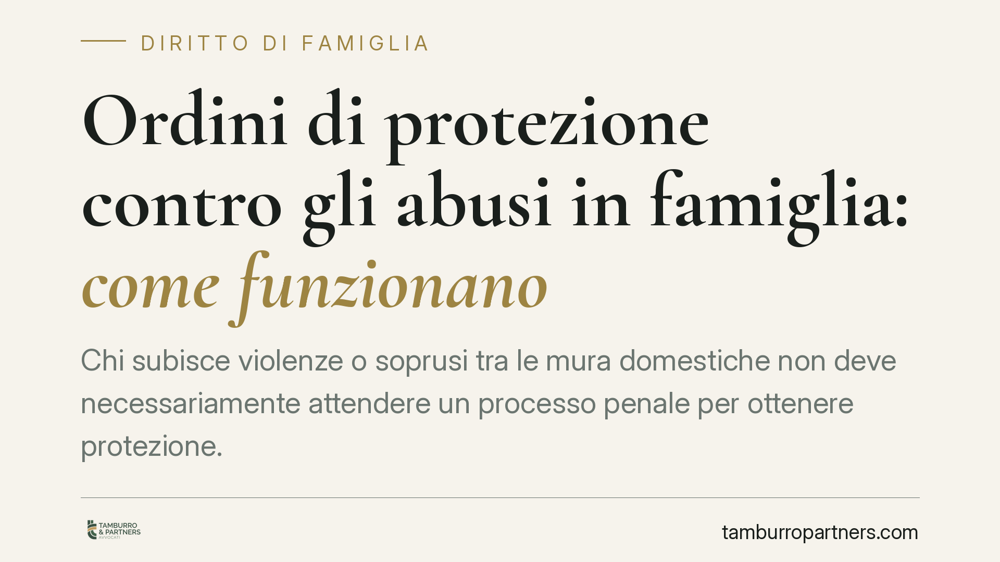

Ordini di protezione contro gli abusi in famiglia: come funzionano
Chi subisce violenze o soprusi tra le mura domestiche non deve necessariamente attendere un processo penale per ottenere protezione. Il codice civile prevede gli ordini di protezione, misure rapide con cui il giudice può allontanare l'autore delle condotte abusive. Vediamo presupposti, procedura e strumenti operativi a tutela di conviventi e figli minori.

Il fatto e perché conta
La violenza domestica non si esaurisce nell'aggressione fisica. Include condotte reiterate — intimidazioni, controllo economico, umiliazioni, minacce — che compromettono l'integrità psichica e la libertà della persona offesa.
Contro queste condotte l'ordinamento offre uno strumento civile spesso sottovalutato: gli ordini di protezione. Sono provvedimenti che il giudice civile adotta in tempi rapidi, indipendentemente dall'eventuale procedimento penale. La loro utilità sta proprio nella tempestività: intervengono quando la convivenza è ancora fonte di pericolo.
Inquadramento normativo
La disciplina base è l'art. 342 bis del codice civile. La norma consente al giudice di intervenire quando la condotta di un coniuge o convivente è "causa di grave pregiudizio all'integrità fisica o morale ovvero alla libertà" dell'altro membro della famiglia.
Il giudice può ordinare la cessazione della condotta e disporre l'allontanamento dalla casa familiare dell'autore degli abusi, con il divieto di avvicinarsi ai luoghi frequentati dalla vittima: abitazione, lavoro, scuola dei figli. Può inoltre disporre l'intervento dei servizi sociali e il pagamento periodico di un assegno a favore di chi resta privo di mezzi.
Sul piano procedurale, il riferimento è oggi l'art. 473-bis.69 del codice di procedura civile, che disciplina il procedimento davanti al tribunale, caratterizzato da forme snelle e possibilità di provvedimento anche inaudita altera parte — cioè senza previo contraddittorio — nei casi di urgenza.
A garanzia dell'efficacia della misura interviene poi l'art. 388 del codice penale: la violazione dell'ordine di protezione integra il reato di mancata esecuzione dolosa di un provvedimento del giudice. L'ordine, quindi, non è una semplice raccomandazione: la sua inosservanza ha conseguenze penali.
La giurisprudenza di merito ha progressivamente ampliato l'ambito applicativo. Il Tribunale di Pavia ha riconosciuto la tutela anche in situazioni di violenza psicologica ed economica; il Tribunale di Firenze ha valorizzato la protezione dei figli minori esposti alla violenza assistita; il Tribunale di Rieti ha ribadito la rapidità dell'intervento nei casi di pericolo attuale.
Cosa cambia per chi subisce abusi
Il primo punto pratico è che non serve una condanna penale per ottenere protezione. L'ordine civile è autonomo e presuppone una valutazione del pregiudizio, non un accertamento definitivo di responsabilità penale.
Secondo aspetto: la tutela copre anche i conviventi more uxorio, non solo i coniugi. La forma del legame familiare non è discriminante.
Terzo: la violenza assistita — quella che i minori subiscono assistendo agli abusi sull'altro genitore — è oggi riconosciuta come pregiudizio autonomo. Il giudice può modulare le misure tenendo conto della presenza di figli, incidendo anche su affidamento e frequentazione.
Infine, la durata. L'ordine ha efficacia temporanea, ma può essere prorogato se persistono i presupposti. Non è una soluzione definitiva: è uno strumento ponte, che mette in sicurezza la vittima mentre si definiscono gli assetti familiari.
Cosa fare in concreto
- Documenta gli episodi. Annota date, luoghi e circostanze; conserva messaggi, referti medici, certificati del pronto soccorso. La prova documentale è decisiva nel procedimento d'urgenza.
- Non attendere l'aggravarsi. L'ordine di protezione ha senso proprio nella fase in cui il pericolo è attuale. Rivolgersi tempestivamente aumenta l'efficacia della tutela.
- Valuta la denuncia penale in parallelo. Il procedimento civile e quello penale sono autonomi e possono procedere insieme, rafforzando la posizione della vittima.
- Coinvolgi i servizi sociali e i centri antiviolenza. Il giudice può disporne l'intervento; una rete di supporto già attiva agevola l'istruttoria.
- Consultati con un legale prima di depositare il ricorso. La corretta formulazione delle richieste e la scelta tra procedura ordinaria o d'urgenza incidono sui tempi e sull'esito.
Gli ordini di protezione restano uno degli strumenti più efficaci per interrompere una spirale di abusi. Conoscerli è il primo passo per usarli.
---
*Contributo informativo a cura di Tamburro & Partners - Avv. Giuseppe Tamburro. Non costituisce parere legale.*
Ogni famiglia ha il suo equilibrio.
Separazione, divorzio, affidamento, assegno: se vuoi un confronto riservato su una specifica situazione, scrivi allo studio. Ti rispondiamo entro un giorno lavorativo.